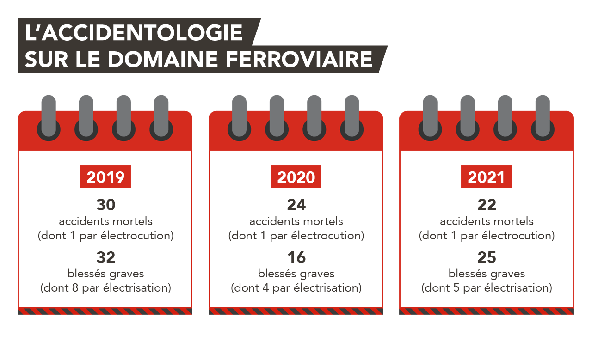

La malveillance ferroviaire
S'introduire sur les voies ferrées est strictement interdit et extrêmement dangereux. Pourtant, ce phénomène est de plus en plus courant et largement visible sur les réseaux sociaux.
La malveillance en quelque chiffres
Chaque année, des accidents mortels sont à déplorer sur le réseau ferré. Nombre d'entre eux sont liés à des comportements dangereux lors d'intrusions illicites. Des accidents qui pourraient être évités.
Les 3 risques majeurs sont :
- Le heurt par un train : un train roule vite, on ne le voit pas et on ne l'entend pas toujours arriver. Sa distance de freinage est très importante : il ne pourra pas vous éviter.
- L'électrocution par les câbles électriques : les trains circulent grâce à des câbles électriques, les caténaires, au-dessus des voies ferrées. Ces câbles sont alimentés 24h/24 par une tension très puissante de 1 500 à 25 000 volts.
- La chute : grimper sur un viaduc ou explorer des zones désaffectées représente un risque important de chute.
Nos rapports sûreté